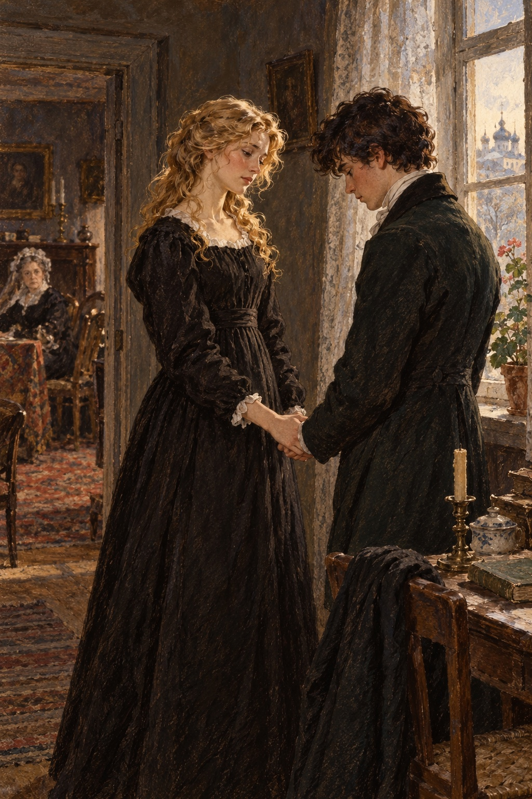

Ivan Turgenev · First Love
제20장
다음 날 어머니는
시내로 돌아가겠다고 했다.
아침에 아버지가
어머니의 침실로 들어가
둘이서 오래 이야기했다.
무슨 말을 했는지는
아무도 듣지 못했다.
그 뒤 어머니는
더 울지 않았다.
마음을 가라앉히고
식사도 달라고 했다.
그러나 방 밖으로 나오지 않았고
이사하겠다는 생각도
바꾸지 않았다.
나는 온종일 헤매 다녔다.
정원에는 가지 않았고
별채 쪽도 한 번 보지 않았다.
저녁에는 놀라운 광경을 보았다.
아버지가 말렙스키 백작의
팔을 잡고
큰 방을 가로질러
현관으로 데려갔다.
하인이 보는 앞에서
차갑게 말했다.
“며칠 전 다른 집에서
백작님께 문을 가리킨 일이
있었지요.
나는 긴 설명을 하지 않겠습니다.
다만 다시 우리 집에 오시면
창밖으로 내던질 겁니다.
당신 필체가 마음에 들지 않는군요.”
백작은 이를 악물고
허리를 굽혔다.
몸을 잔뜩 움츠린 채
사라졌다.
아르바트에 있는
우리 집으로 돌아갈
준비가 시작됐다.
아버지도 더는
별장에 있고 싶지 않았을 것이다.
하지만 어머니에게
소란을 만들지 말자고
설득한 모양이었다.
모든 일이 조용하고
서두르지 않게 진행됐다.
어머니는 공작부인에게
인사를 전하라고까지 했다.
몸이 좋지 않아
떠나기 전에 만나지 못해
아쉽다는 말도 덧붙였다.
나는 정신 나간 사람처럼
이리저리 걸었다.
모든 일이 빨리 끝나기만 바랐다.
한 가지 생각이
머리에서 떠나지 않았다.
젊은 여자이고,
그래도 공녀인 지나이다가
어떻게 그런 일을
마음먹을 수 있었을까.
아버지는 유부남이라는 걸 알았다.
벨로브조로프와 같은 남자에게
결혼하자고 하면
할 수도 있었는데.
무엇을 바랐을까?
앞날 전체를 망칠까 봐
두렵지도 않았을까?
‘그래.
이게 사랑이구나.
이게 열정과 헌신이구나.’
루신의 말이 떠올랐다.
어떤 사람에게는
자신을 희생하는 일이
달콤하다는 말.
어느 날 별채 창 하나에
창백한 얼룩이 보였다.
‘지나이다의 얼굴인가?’
정말 그녀였다.
참을 수 없었다.
마지막 작별 인사도 없이
떠날 수는 없었다.
기회를 보아
별채로 갔다.
응접실에서 공작부인이
언제나처럼
흐트러진 모습으로 맞았다.
“어머, 젊은 양반네는
왜 그렇게 일찍 떠나요?”
그녀가 양쪽 콧구멍에
코담배를 넣으며 물었다.
나는 그녀를 보고
가슴을 놓았다.
필리프가 말한
빚 문서가 마음에 걸렸었다.
공작부인은
아무것도 모르는 듯했다.
적어도 그때의 내 눈에는
그렇게 보였다.
옆방에서 지나이다가 나타났다.
검은 옷을 입고
머리는 풀어 내렸다.
창백한 얼굴이었다.
그녀는 말없이 내 손을 잡고
안쪽으로 데려갔다.

“목소리를 듣고
바로 나왔어요.”
그녀가 말했다.
“우리 곁을 그렇게 쉽게
떠날 수 있었나요,
못된 아이 같으니.”
“작별 인사를 하러 왔어요.
아마 영영 헤어질 거예요.
들으셨겠지만
우리는 떠납니다.”
지나이다는 나를
빤히 바라보았다.
“네, 들었어요.
와 줘서 고마워요.
다시 못 볼 줄 알았어요.
저를 나쁘게 기억하지 마세요.
때때로 당신을 괴롭힌 건 알아요.
그래도 저는
당신이 생각하는
그런 사람이 아니에요.”
그녀는 몸을 돌려
창가에 기댔다.
“정말 아니에요.
저를 나쁘게 생각하는 거 알아요.”
“제가요?”
“네, 당신이요.”
“제가?”
나는 슬프게 되물었다.
거스를 수 없는 그녀의 매력에
가슴이 다시 떨렸다.
“믿어 주세요,
지나이다 알렉산드로브나.
무슨 일을 하셨든,
저를 얼마나 괴롭히셨든,
저는 평생 당신을
사랑하고 우러러볼 거예요.”
그녀가 재빨리 돌아섰다.
두 팔을 활짝 벌려
내 머리를 감싸 안았다.
뜨겁고 긴 입맞춤을 했다.
그 입맞춤이
누구를 찾고 있었는지는
하느님만 아실 것이다.
나는 그 달콤함을
간절히 받아들였다.
다시는 겪지 못하리라는 걸
알고 있었다.
“안녕히 계세요.
안녕히….”
나는 되풀이했다.
그녀는 내게서 벗어나
방을 나갔다.
나도 떠났다.
그때의 감정을
말로 옮길 수 없다.
다시는 겪고 싶지 않지만,
한 번도 겪지 않았다면
불행했을 것이다.
우리는 시내로 돌아왔다.
오랫동안 지난 일을
떨치지 못했다.
공부도 쉽게 다시
시작하지 못했다.
마음의 상처는
천천히 아물었다.
그런데도 아버지에게는
나쁜 감정이 없었다.
오히려 내 눈에
아버지가 더 크게 보였다.
그 모순은 심리학자들이
알아서 설명할 일이다.
어느 날 큰길을 걷다가
루신과 마주쳤다.
얼마나 기뻤는지 모른다.
나는 솔직하고
꾸밈없는 그를 좋아했다.
그와 함께 떠오르는
기억 때문에도
내게는 소중한 사람이었다.
나는 그에게 달려갔다.
“아, 젊은 양반이군요.”
루신이 눈썹을 찌푸렸다.
“어디 한번 봅시다.
얼굴빛은 아직 누렇지만
눈에서는 예전의
쓸데없는 열기가 빠졌군요.
애완견이 아니라
사람처럼 보여요.
좋습니다.
공부는 하고 있습니까?”
나는 한숨을 쉬었다.
거짓말은 싫었고
사실을 말하기는 부끄러웠다.
“괜찮아요.
기죽지 말아요.”
루신이 말을 이었다.
“중요한 건 생활을 바로 하고
감정에 휩쓸리지 않는 겁니다.
물결이 어디로 데려가든
떠내려가면 좋을 게 없어요.
바위 위에 서더라도
자기 발로 서야지요.
나도 기침이 나네요.
그런데 벨로브조로프 소식은
들었습니까?”
“아니요.
무슨 일인데요?”
“행방불명입니다.
캅카스로 갔다고 하더군요.
젊은 양반에게
교훈이 될 일이지요.
제때 떠날 줄 모르고
얽힌 그물을 끊지 못해서
벌어진 일입니다.
당신은 무사히 빠져나온 듯해요.
다시 걸려들지 마세요.
안녕히.”
‘다시는 걸려들지 않아.
그녀를 또 볼 일도 없겠지.’
하지만 나는 지나이다를
한 번 더 보게 될 운명이었다.